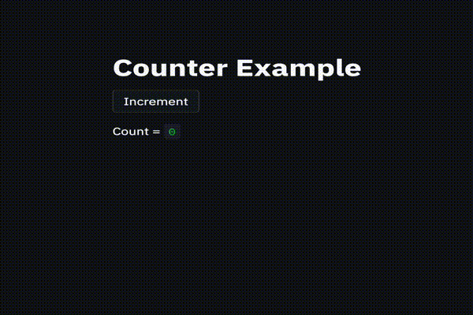
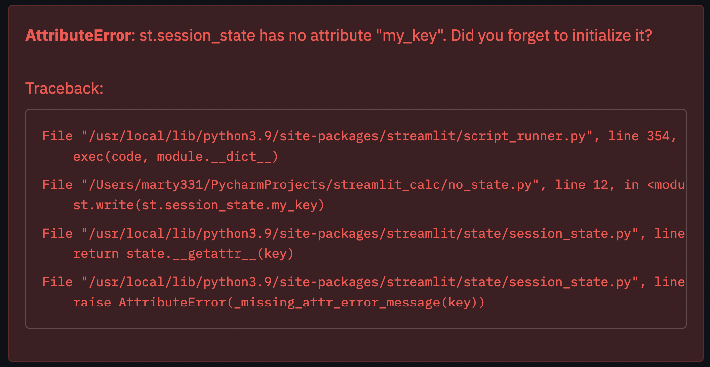
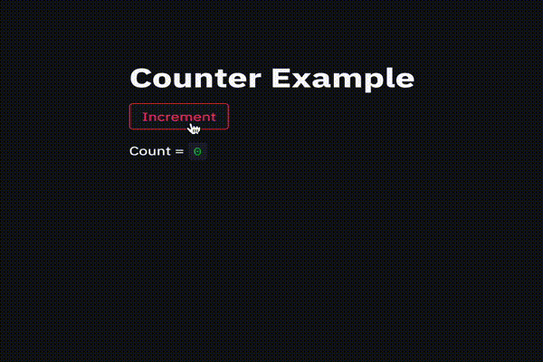
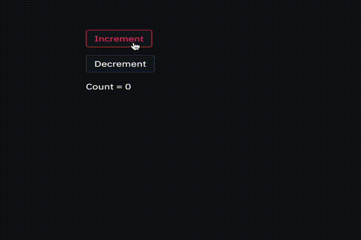
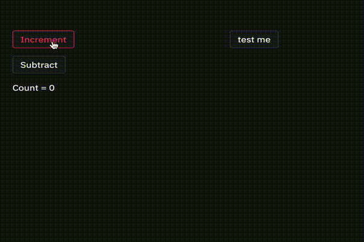

Streamlit Class Based App

Streamlit Class Based App
=========================
Streamlit is an app that allows a Python devloper to turn their Python code into a shareable web app. It works great and it's very easy to get started. May data scientist use Jupyter notebooks and Steamlist is similar in a way but creates an actual web application that can be published.
Streamlit Nuances
One of the first issues I found with Streamlit was anytime a user has any interaction with a widget (button, slider, textbox, etc), then the entire application is ran again. I hope that the foks at Streamlit come up with a solution to this or maybe an option to turn this off so every widget is not recreated, but I digress.
Another issue is state management. Streamlit has tackled state managment as you'll see later on, but their documentation could be improved with better examples. The examples they have are really well written but there are just not many of them and they are basic.
Streamlit Apps Without State
As I mentioned previously, the code in your streamlit app is ran on every touch of a widget. So that means if you change a value but don't have state stored then you have lost your value and the inital value is reset. Let's take a look at Streamlit's example of an app that does not retain state. Here we will simply click a button titled 'Increment' that should +1 to the current value of count....only it never makes it past 1.
import streamlit as st
st.title('Counter Example')
count = 0
increment = st.button('Increment')
if increment:
count += 1
st.write('Count = ', count)

Streamlit Apps With State
The team at streamlit recognized this shortcoming and came up with a solution to the state problem. There were other solutions before it that were developed by developers outside of the project also. Streamlit's solution is to offer up session_state and it works really well. I'm currently using it in production apps.
Here is the way Streamlit explains how to initialize state in an app:
# Check if 'key' already exists in session_state
# If not, then initialize it
if 'my_key' not in st.session_state:
st.session_state['my_key'] = 'value'
# Session State also supports the attribute based syntax
if 'my_key' not in st.session_state:
st.session_state.my_key = 'value'
So session_state works similarly to JSON but not exatly like JSON. First you search to see if a key is present in the session_state and if not then create the initial value. Looking back on my attempt to figure out how to implement class based Streamlit apps I wish I had clung to that nugget as it proved to be essential.
To access a value in session_state you will simply call it as below:
st.session_state.my_key
However if you attempt to access a key that has not been initialized you will get the following type of exception:

The moral of the story is, always initialze any varialbe you want to keep in session_state. We'll get to that really soon.
So let's see the the same type of app as before but one that retains state. We will implement an Increment and see how state is retained:
import streamlit as st
st.title('Counter Example')
if 'count' not in st.session_state:
st.session_state.count = 0
increment = st.button('Increment')
if increment:
st.session_state.count += 1
st.write('Count = ', st.session_state.count)
And then we can see this works:

Class Based Streamlit App - Broken State
So now we understand how to handle state in Streamlit but the code we've written so far is not class based and not object oriented. It is functional but it's not up to professional standards and not extensible. The reason I was even concerned with this is I have a client who needed a Streamlit app upgraded and it needed to retain state for multiple files and calculated values. It was written by a data scientist and the work was brilliant, but it just wasn't extensible. So I was tasked with correcting that, and I did.
Let's rewrite the app as a class based app and we will add in a Decrement button to go along with our Increment button. I will show you how I thought this should have been written in this iteration and you'll see that the state is now broken. Bummer.
import streamlit as st
class Counter:
def __init__(self):
st.session_state.count = 0
st.session_state.title = "Calculator"
def add(self):
st.session_state.count += 1
def subtract(self):
st.session_state.count -= 1
def window(self):
st.button("Increment", on_click=self.add)
st.button("Decrement", on_click=self.subtract)
st.write(f'Count = {st.session_state.count}')
if __name__ == '__main__':
ct = Counter()
ct.window()
Let's focus on the __init__ method. At first glance you may think nothing of this, it looks like any other __init__ method you've seen however the problem is that Streamlit has the nuances that I mentioned previously - it reruns every time you touch a widget and session_status is going to be reset because of this nuance.
Let's take a look at what happens in real life. As you see, state is not being retained at all, no matter how many times we click Increment or Drecrement the value of count is always zero. I don't know about the apps you've worked on, but to me this is less than ideal. So let's fix it once and for all.

Class Based Streamlit App - Working State
I really felt like kicking myself once I figured out my error, it was simple and the Streamlit docs literally told me what I needed to do. In ithe __init__ method you need to look to see if your key is in session_state. If it's not, then you add it with a default value. If it is, then you do nothing. Simple.
Here's the code:
import streamlit as st
class Counter:
def __init__(self):
if 'count' not in st.session_state:
st.session_state.count = 0
if 'title' not in st.session_state:
st.session_state.title = "Calculator"
self.col1, self.col2 = st.columns(2)
def add(self):
st.session_state.count += 1
def subtract(self):
st.session_state.count -= 1
def tester(self):
if 'tester' not in st.session_state:
st.session_state.tester = "Tester"
else:
st.session_state.tester = "Already tested"
with self.col2:
st.write(f"Hello from the {st.session_state.tester}!")
def window(self):
with self.col1:
st.button("Increment", on_click=self.add)
st.button("Subtract", on_click=self.subtract)
st.write(f'Count = {st.session_state.count}')
with self.col2:
st.button('test me', on_click=self.tester)
if __name__ == '__main__':
ct = Counter()
ct.window()
So now we look for the value in session_state, if it's there no action is taken, if it is not there then we sent an initial value. Streamlit handles the reloads and retains state for us. Also, in this iteration I've added in two columns and a new button to display a message for the user, just to prove that state is retained with different interactions.

And there you have it. Thanks for reading. Please feel free to reach out to me on Twitter: marty331
Photo by Jack Gittoes from Pexels